Можно?
18 похожих продуктов, 10 статистических показателей и план проверки гипотезы. Исследовательская версия от 12 сентября 2026 года.
Список продуктов и первичные данные
Плейбук первых12 недель
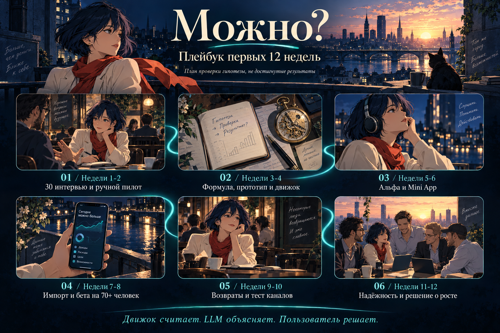
Интервью, ручной пилот, формула, MVP, повторное использование и решение о росте.16 слайдов презентации
01. Можно?02. Вопрос перед покупкой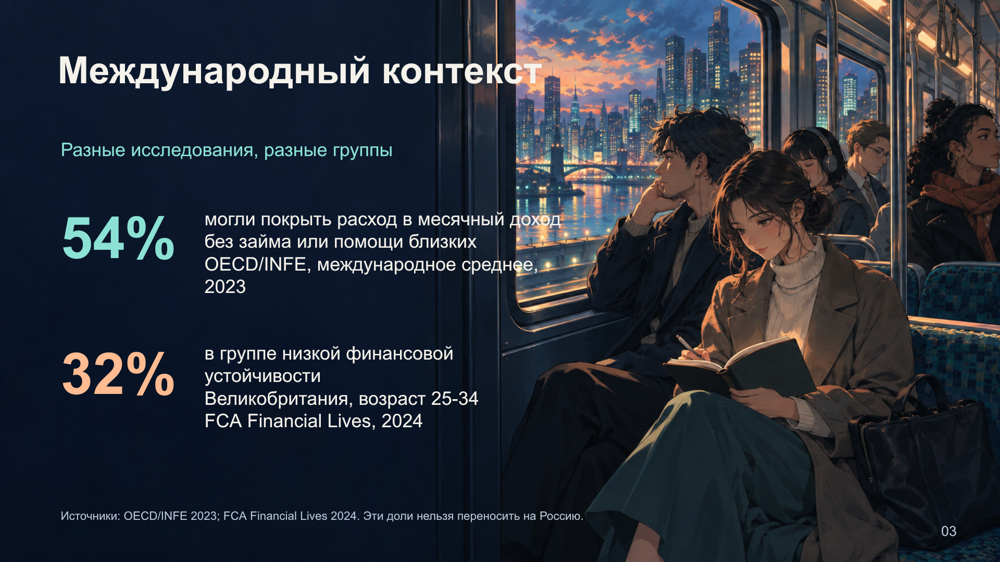
03. Международный контекст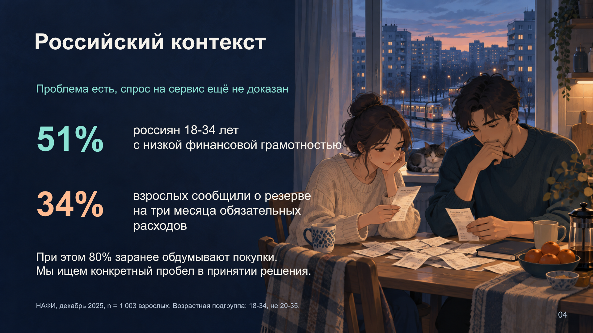
04. Российский контекст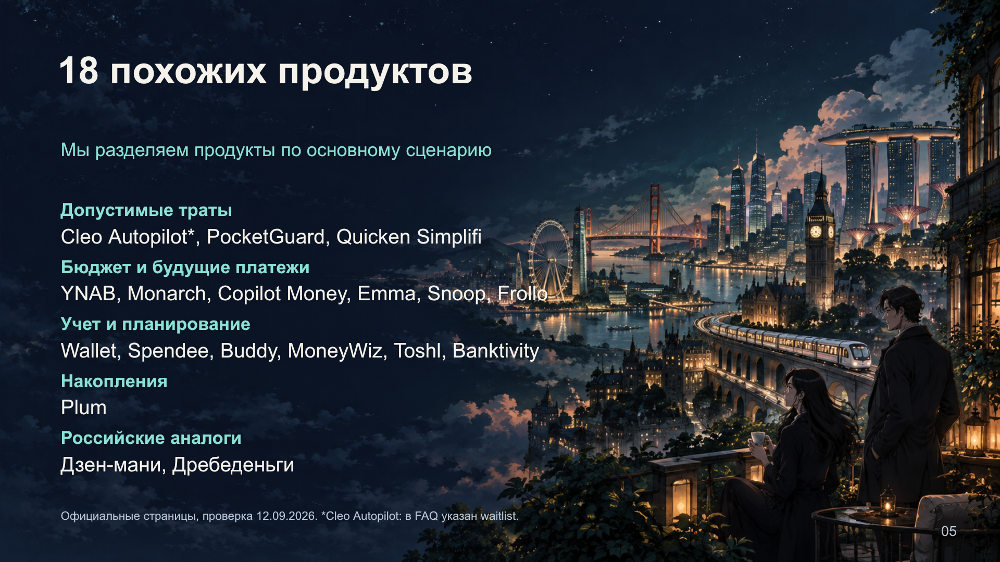
05. 18 похожих продуктов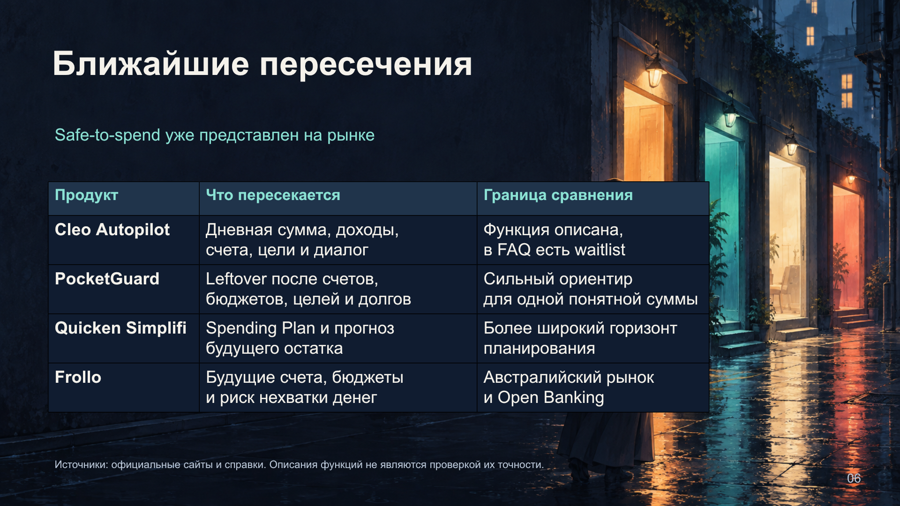
06. Ближайшие пересечения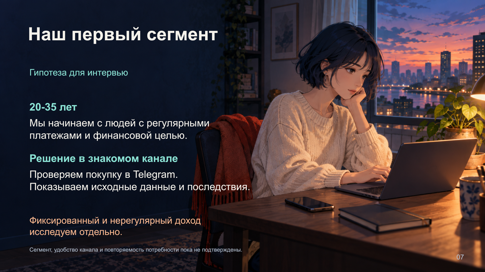
07. Наш первый сегмент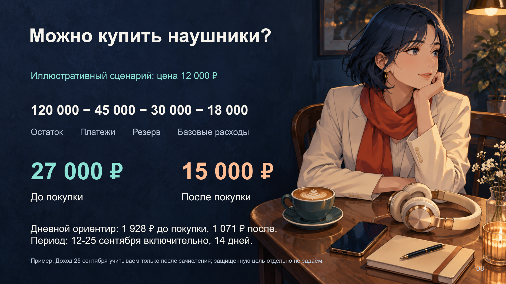
08. Можно купить наушники?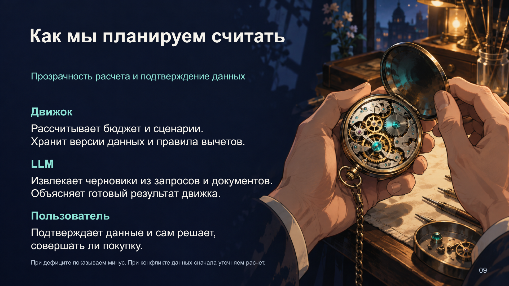
09. Как мы планируем считать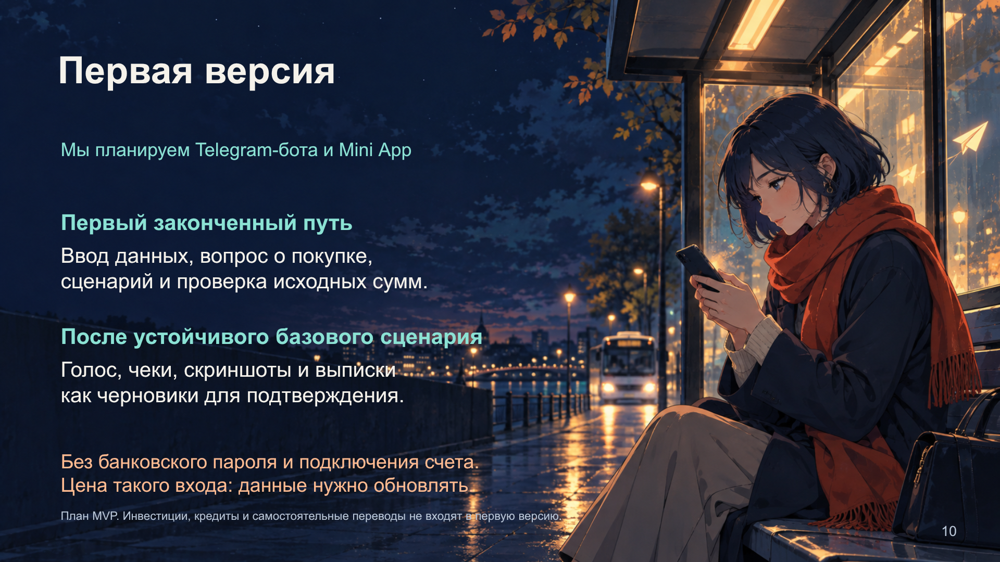
10. Первая версия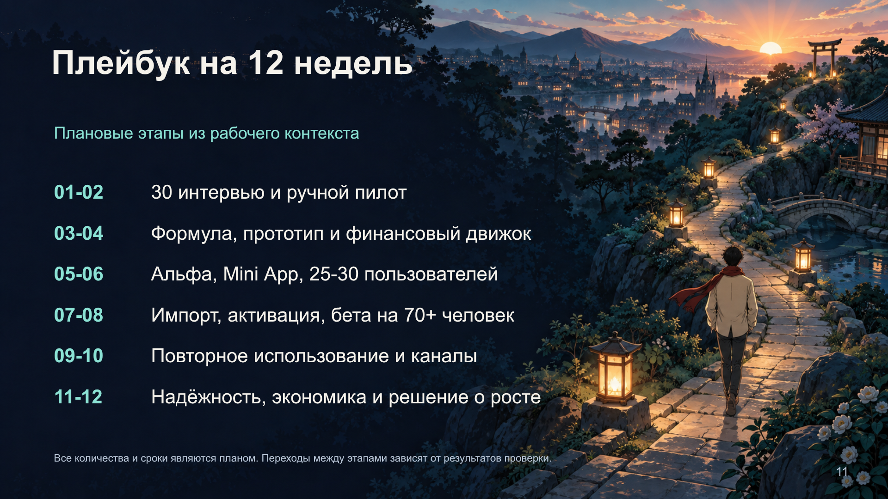
11. Плейбук на 12 недель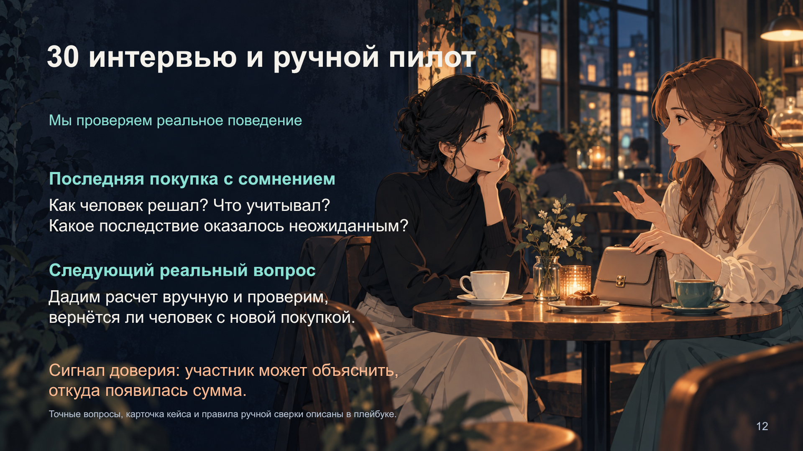
12. 30 интервью и ручной пилот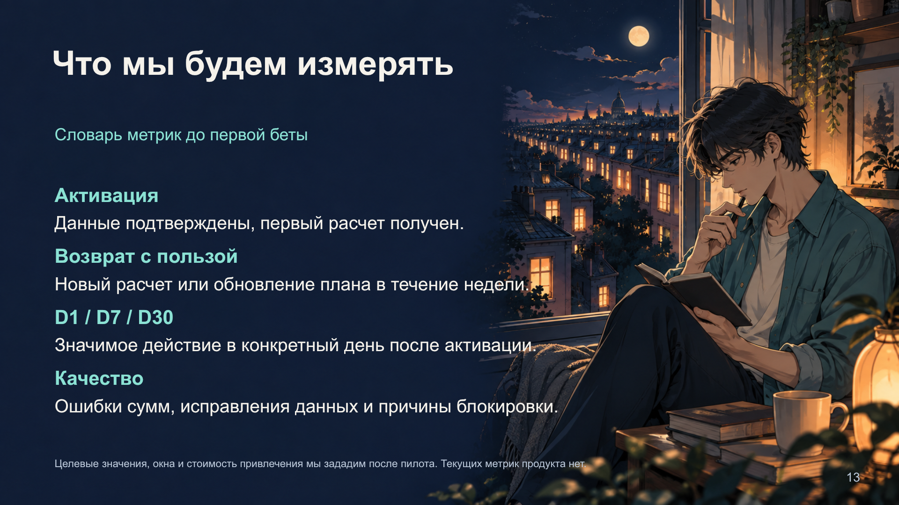
13. Что мы будем измерять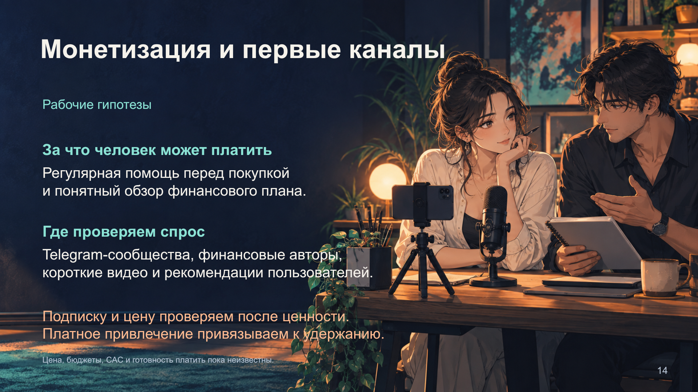
14. Монетизация и первые каналы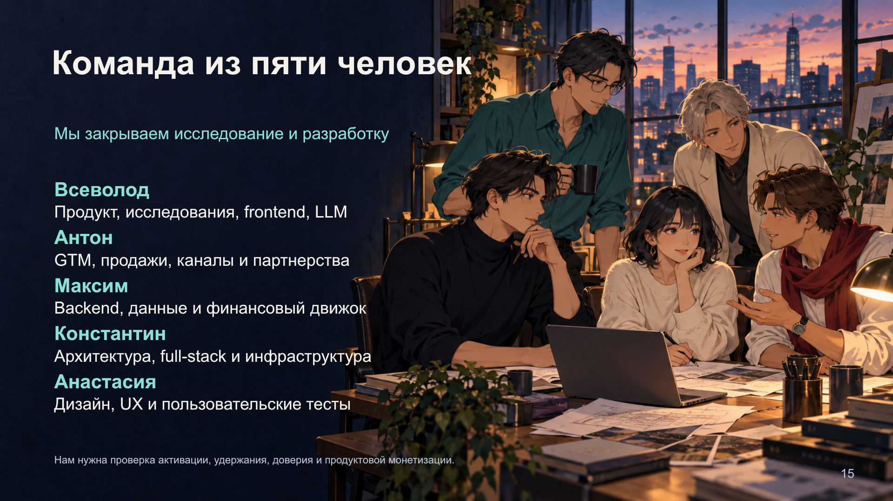
15. Команда из пяти человек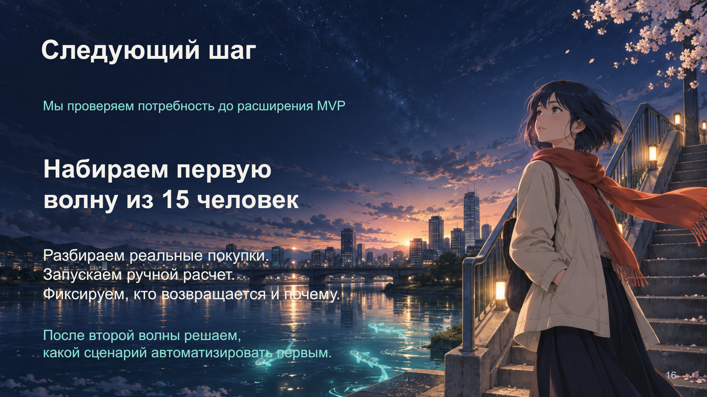
16. Следующий шаг